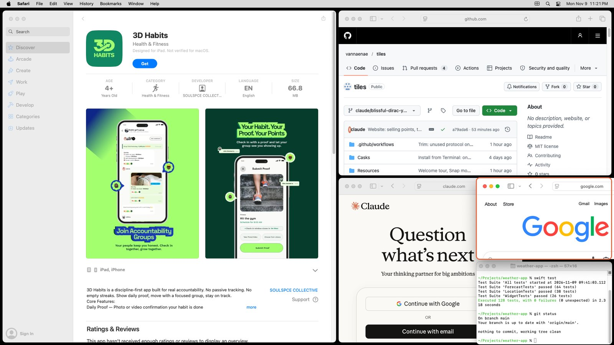

Every window,
in its place.
Tiles is a free window manager for Mac. Windows arrange themselves the moment they open, every screen gets the right layout, and your desk setup comes back when you plug in.
or install from Terminal:
curl -fsSL https://github.com/vannaenae/tiles/releases/latest/download/install.sh | bashmacOS 13 or later · Apple silicon and Intel · Free and open source

A tidy desktop, without the effort
Zero effort
Open an app and it lands in the right place. Close one and the rest fill the gap. No dragging, no resizing.
Easy to learn
A welcome tour on first launch, every shortcut is ⌃⌥ plus one key, and ⌃⌥/ shows them all on screen.
Your way
Automatic tiling, or Snap mode where windows stay put until you drag one to an edge. Switch any time.
Private by design
No account, no analytics, no screen recording. Tiles reads window positions and app names, and nothing leaves your Mac.
Everything in Tiles
Layouts
- 11 layouts: Dwindle, Master & Stack, Center Stage, Columns, Thirds, Rows, Grid, Monocle, Scrolling and more
- A different layout for each display
- Ultrawide screens detected automatically, with a width cap so nothing stretches
- Scrolling: windows keep their width in a row you slide along
Desktops
- Up to nine workspaces per display
- Name them and give each its own layout
- ⌃⌥2 to switch, ⌃⌥⇧2 to send a window
- No need to change any macOS security settings
Mouse
- Drag one window onto another to swap them
- Hold ⌥ while dropping to stack them in one tile
- Drag the edge between windows and both resize
- Snap mode: edges and corners snap, with a preview
Keyboard
- 50+ shortcuts, every one remappable
- Window finder: ⌃⌥G, type a few letters, Return
- On-screen cheat sheet with ⌃⌥/
- Focus: one window fills the screen, then goes back
Docking
- Your arrangement is saved for each set of displays
- Plug your monitor back in and it returns
- One shortcut undoes a restore
- Windows from an unplugged screen never go missing
App rules
- Send an app's windows to a chosen display
- Open an app in the main tile every time
- Keep apps like Calculator floating
Look and feel
- Light, Dark or follow macOS
- Five colour themes
- Optional focus outline and window animation
- English, Spanish, French and German
Settings that travel
- A live dashboard of every display
- Named profiles, switched in one click
- Export and import between Macs
- Built-in updates, signed by the developer
Automation
tiles://links for Shortcuts and Alfred- A
tilescommand for Terminal - Ready-made Raycast commands
tiles statusfor scripts and AI agents
Handy shortcuts
Hold ⌃ Control and ⌥ Option, then press one key. Every one can be changed.
| arrow | Jump to the window on that side |
| ⇧ + arrow | Move the window itself |
| Space | Next layout |
| M | Fill the screen with this window; press again to put it back |
| F | Float or tile this window |
| 1–9 | Go to that desktop; add ⇧ to send the window there |
| G | Find a window by name |
| / | Show the shortcut list on screen |
Questions
Is it really free?
Yes. Tiles is free and open source under the MIT License. There is no paid tier.
Why does it need Accessibility access?
macOS only lets an app move other apps' windows with that permission. Tiles uses it to read window positions and app names and to move windows. It does not record your screen or read what's inside your windows.
Does Tiles collect any data?
No. There is no account and no analytics. The only network request is a daily check with GitHub for a new version, which you can switch off. See the privacy policy.
I don't want everything tiled automatically.
Choose Snap mode in Settings. Windows stay where you put them, and dragging one to a screen edge snaps it. You can also float a single window or a whole app.
Which Macs does it run on?
macOS 13 Ventura or later, on Apple silicon and Intel.
How do I remove it?
Quit Tiles and drag it from Applications to the Bin. Your windows go back to normal straight away.
Get Tiles
Free for macOS 13 or later.